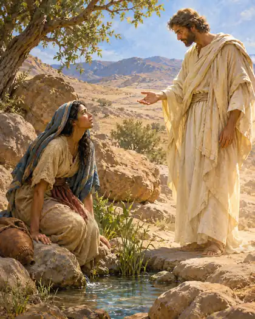

16:1 Sarai mujer de Abram no le daba hijos; y ella tenía una sierva egipcia, que se llamaba Agar.
16:2 Dijo entonces Sarai a Abram: — Ya ves que Jehová me ha hecho estéril; te ruego, pues, que te llegues a mi sierva; quizá tendré hijos de ella.111 Y atendió Abram al ruego de Sarai.
16:3 Y Sarai mujer de Abram tomó a Agar su sierva egipcia, al cabo de diez años que había habitado Abram en la tierra de Canaán, y la dio por mujer a Abram su marido.
16:4 Y él se llegó a Agar, la cual concibió; y cuando vio que había concebido, miraba con desprecio a su señora.
16:5 Entonces Sarai dijo a Abram: — Mi afrenta sea sobre ti; yo te di mi sierva por mujer, y viéndose encinta, me mira con desprecio; juzgue Jehová entre tú y yo.
16:6 Y respondió Abram a Sarai: — He aquí, tu sierva está en tu mano; haz con ella lo que bien te parezca. Y como Sarai la afligía, ella huyó de su presencia.

16:7 Y la halló el ángel de Jehová junto a una fuente de agua en el desierto, junto a la fuente que está en el camino de Shur.112
16:8 Y le dijo: — Agar, sierva de Sarai, ¿de dónde vienes tú, y a dónde vas? Y ella respondió: — Huyo de delante de Sarai mi señora.
16:9 Y le dijo el ángel de Jehová: — Vuélvete a tu señora, y ponte sumisa bajo su mano.
16:10 Le dijo también el ángel de Jehová: — Multiplicaré tanto tu descendencia, que no podrá ser contada a causa de la multitud.
16:11 Además le dijo el ángel de Jehová: — He aquí que has concebido, y darás a luz un hijo, y llamarás su nombre Ismael, porque Jehová ha oído tu aflicción.113
16:12 Y él será hombre fiero; su mano será contra todos, y la mano de todos contra él, y delante de todos sus hermanos habitará.114
16:13 Entonces llamó el nombre de Jehová que con ella hablaba: — Tú eres Dios que ve; porque dijo: ¿No he visto también aquí al que me ve?115
16:14 Por lo cual llamó al pozo: Pozo del Viviente-que-me-ve. He aquí está entre Cades y Bered.

16:15 Y Agar dio a luz un hijo a Abram, y llamó Abram el nombre del hijo que le dio Agar, Ismael.
16:16 Era Abram de edad de ochenta y seis años, cuando Agar dio a luz a Ismael.
17:1 Era Abram de edad de noventa y nueve años, cuando le apareció Jehová y le dijo: — Yo soy el Dios Todopoderoso116; anda delante de mí y sé perfecto.
17:2 Y pondré mi pacto entre mí y ti, y te multiplicaré en gran manera.
17:3 Entonces Abram se postró sobre su rostro, y Dios habló con él, diciendo:
17:4 — He aquí mi pacto es contigo, y serás padre de muchedumbre de gentes.
17:5 Y no se llamará más tu nombre Abram, sino que será tu nombre Abraham, porque te he puesto por padre de muchedumbre de gentes.117
17:6 Y te multiplicaré en gran manera, y haré naciones de ti, y reyes saldrán de ti.
17:7 Y estableceré mi pacto entre mí y ti, y tu descendencia después de ti en sus generaciones, por pacto perpetuo, para ser tu Dios, y el de tu descendencia después de ti.
17:8 Y te daré a ti, y a tu descendencia después de ti, la tierra en que moras, toda la tierra de Canaán en heredad perpetua; y seré el Dios de ellos.
17:9 Dijo de nuevo Dios a Abraham: — En cuanto a ti, guardarás mi pacto, tú y tu descendencia después de ti por sus generaciones.
17:10 Este es mi pacto, que guardaréis entre mí y vosotros y tu descendencia después de ti: Será circuncidado todo varón de entre vosotros.
17:11 Circuncidaréis, pues, la carne de vuestro prepucio, y será por señal del pacto entre mí y vosotros.
17:12 Y de edad de ocho días será circuncidado todo varón entre vosotros por vuestras generaciones; el nacido en casa, y el comprado por dinero a cualquier extranjero, que no fuere de tu linaje.
17:13 Debe ser circuncidado el nacido en tu casa, y el comprado por tu dinero; y estará mi pacto en vuestra carne por pacto perpetuo.
17:14 Y el varón incircunciso, el que no hubiere circuncidado la carne de su prepucio, aquella persona será cortada de su pueblo; ha violado mi pacto.
17:15 Dijo también Dios a Abraham: — A Sarai tu mujer no la llamarás Sarai, mas Sara será su nombre.118
17:16 Y la bendeciré, y también te daré de ella hijo; sí, la bendeciré, y vendrá a ser madre de naciones; reyes de pueblos vendrán de ella.
17:17 Entonces Abraham se postró sobre su rostro, y se rio, y dijo en su corazón: ¿A hombre de cien años ha de nacer hijo? ¿Y Sara, ya de noventa años, ha de concebir?
17:18 Y dijo Abraham a Dios: — Ojalá Ismael viva delante de ti.
17:19 Respondió Dios: — Ciertamente Sara tu mujer te dará a luz un hijo, y llamarás su nombre Isaac119; y confirmaré mi pacto con él como pacto perpetuo para sus descendientes después de él.
17:20 Y en cuanto a Ismael, también te he oído120; he aquí que le bendeciré, y le haré fructificar y multiplicar mucho en gran manera; doce príncipes engendrará, y haré de él una gran nación121.
17:21 Mas yo estableceré mi pacto con Isaac, el que Sara te dará a luz por este tiempo el año que viene.
17:22 Y acabó de hablar con él, y subió Dios de estar con Abraham.
17:23 Entonces tomó Abraham a Ismael su hijo, y a todos los siervos nacidos en su casa, y a todos los comprados por su dinero, a todo varón entre los domésticos de la casa de Abraham, y circuncidó la carne del prepucio de ellos en aquel mismo día, como Dios le había dicho.
17:24 Era Abraham de edad de noventa y nueve años cuando circuncidó la carne de su prepucio.
17:25 E Ismael su hijo era de trece años, cuando fue circuncidada la carne de su prepucio.
17:26 En el mismo día fueron circuncidados Abraham e Ismael su hijo.
17:27 Y todos los varones de su casa, el siervo nacido en casa, y el comprado del extranjero por dinero, fueron circuncidados con él.
Notas del editor
- 111En el antiguo Oriente Próximo estaba documentada la práctica de que una esposa sin hijos entregara una esclava a su marido para obtener descendencia. Algunos contratos matrimoniales babilónicos establecían que los hijos nacidos de esta unión fueran considerados legalmente hijos de la esposa principal. ↩
- 112Shur era una región desértica situada en las proximidades de la frontera oriental de Egipto, probablemente vinculada al noreste de la península del Sinaí. ↩
- 113Yishma'el, “Dios ha escuchado” ↩
- 114La expresión hebrea pereʾ ʾadam, traducida como «hombre fiero», significa literalmente «asno salvaje de hombre». La imagen del asno salvaje en el antiguo Oriente Próximo evocaba libertad, independencia y resistencia a la domesticación. No necesariamente implica una naturaleza violenta, aunque el resto del versículo anticipa relaciones conflictivas con otros pueblos. ↩
- 115Agar llama a Dios El Roʾí, expresión hebrea que puede entenderse como «Dios que me ve» o «Dios de la visión». El pasaje también permite interpretar que Agar se sorprende de haber visto una manifestación divina y continuar con vida. El ángel de Jehová que aparece en 16:7 es identificado con Jehová en la narración de 16:13. ↩
- 116ʾEl Šadday se traduce aquí como "Dios Todopoderoso" pero su etimología es discutida. ↩
- 117El nombre Abram suele interpretarse como «el padre es exaltado». Abraham parece ser una variante ampliada del mismo nombre, aunque el texto bíblico establece un juego de palabras con ʾab hamôn, «padre de una multitud». Así, el cambio de nombre expresa la promesa de que Abraham será padre de numerosas naciones. ↩
- 118Sarai y Sara son variantes de un nombre hebreo relacionado con la idea de «princesa» o «señora». La tradición judía ha interpretado el cambio como el paso de «mi princesa» a «princesa», es decir, "la princesa de todos los judíos". ↩
- 119El nombre hebreo Yiṣḥāq (Isaac) está relacionado con el verbo ṣāḥaq, «reír». El relato establece así un juego de palabras con la reacción de Abraham al recibir el anuncio del nacimiento de su hijo. El motivo de la risa reaparecerá en Génesis 18:12 y 21:6. ↩
- 120Juego de palabras con el nombre de Ismael, que significa “Dios ha escuchado” ↩
- 121Según la tradición árabe, éstos serán los Adnanitas, los árabes del norte. También son llamados “arabizados” por que Ismael era hebreo y sus descendientes tomaron mujeres de entre los Qahtanitas, los árabes del sur o árabes originales, y adoptaron su cultura. Ya vimos que los Qahnitas también se consideran descendientes de Sem por la rama de Joctán, hermano de Peleg, el antepasado de Abraham. ↩